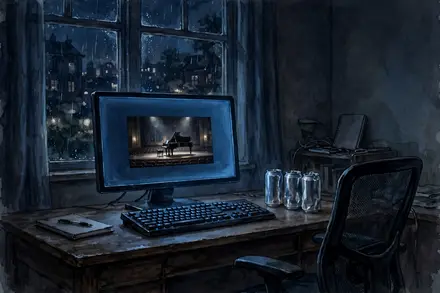

長編・全10章・完結
分からない、という所見
法医解剖医コメディ ・ 約7,367字
解剖しても、映像が降りても、答えは出ない。『分からない』と書くまでの一週間。
第1章 朝の依頼書
五十嵐俊介は、教室のドアを開けるなり言った。
「麻衣ちゃん、人員補充の件、教授に聞いてくれた？」
「聞きました。『検討する』そうです」
「それ、先月も聞いた」
「先々月もです」
事務員の会田麻衣は、顔も上げずに書類を綴じていた。二十六歳、今日も服装のセンスがいい。俊介の扱いには完全に慣れている。
「検討、検討って。検討してる間に俺が過労死したらどうすんの。そしたら誰が俺を解剖すんの。相沢くん？ 勘弁してよ」
「その時は私が教授に『検討が遅すぎました』と伝えます」
「冷たいなあ」
俊介は自席に座り、飴を一粒口に入れた。そこへ新人の相沢直樹が、メモ帳を握りしめて立った。
「先生、本日の司法解剖、依頼書が届いています。四十二歳、男性。在宅勤務中に自宅で亡くなっていたそうです」
「四十二歳。俺と二つしか違わないじゃない」
「はい。石川聡さん。システムエンジニアです。朝、奥様が仕事部屋で倒れているのを発見。椅子にもたれたままだったと」
「外傷は？」
「検視では目立った外傷なし。事件性は低いが、死因がはっきりしないため司法解剖に回った、とのことです」
相沢はメモをめくった。
「発見時の状況ですが、仕事部屋の電気はついたまま、モニターにはコードの画面。スマートフォンのアラームが鳴り続けていて、奥様が変に思って部屋に入ったそうです。夕食は台所に手つかずで残っていたと」
「几帳面にメモするねえ」
「はい。忘れるといけないので」
「そのうち分かるよ。メモしなくても忘れないことと、メモしても覚えられないことがあるって」
「……どちらですか、今回の件は」
「さあね」
俊介は依頼書に目を落とした。死因がはっきりしない。それはつまり、誰にも分からなかった、ということだ。
「……まあ、切れば分かるさ」
その言葉に、相沢が嬉しそうに頷いた。俊介は立ち上がりながら、ふと教授室の前で足を止めた。郷田正樹教授の机の脇に、段ボールが一つ置かれている。昨日まではなかったはずだ。
「教授、引っ越しでもするんですか」
「気にするな」
郷田は短く答えた。六十四歳。いつもと変わらない顔だった。俊介は首を傾げながら、解剖室へ向かった。
第2章 何もない
解剖は、午前十時に始まった。
石川聡の体は、よく働いた四十二歳の体だった。外表に目立った傷はない。首にも、腕にも、争った跡はない。
「開けます」
俊介の声が変わる。解剖台の前に立つと、五十嵐俊介は別人になる。教室でふざけている男の声ではない。
胸を開く。心臓を取り出す。冠動脈を一本ずつ追う。
「……詰まってない」
相沢がメモの手を止めた。
「心筋梗塞なら、どこか詰まってるはずでしょう。でも、ない。心筋にも、目立った壊死がない」
脳を開く。出血なし。腫瘍もない。肺、肝臓、腎臓。一つずつ見て、一つずつ「違う」が積み上がっていく。
薬毒物のスクリーニング結果が届いた。陰性。睡眠薬も、覚醒剤も、アルコールの致死量もない。胃の中には、汁物と見られる内容物が少し残っているだけだった。
血液の生化学検査も追加した。心不全の指標になる数値は、死後の変化の範囲を出ない。糖尿病の兆候もない。電解質の異常も、死を説明できるほどのものはなかった。
俊介は心臓を手に取って、もう一度、ゆっくりと見た。
重さは正常の範囲。弁にも異常はない。教科書通りの、健康な四十二歳の心臓だった。なのに、この心臓の持ち主は死んでいる。
「おかしいのは、どこもおかしくないことですね」
相沢がぽつりと言った。
「そう。その通り」
解剖とは、異常を探す仕事だ。異常が見つかれば、そこから物語が組み上がる。だが今回は、正常しか見つからない。正常の積み重ねの果てに、人が一人死んでいる。
「先生」
相沢が恐る恐る言った。
「何も、ないですね」
「うん。何もない」
俊介は遺体の顔を見た。苦しんだ顔ではない。眠るように、椅子にもたれて死んでいた男。
何もない、というのは、楽なことではない。何かあれば、それが答えになる。何もないということは、答えがどこにもないということだ。
その時、光が差した。
解剖台の前に立つ俊介にだけ見える、あの映像が降りてきた。
第3章 降りてきたもの
映像は、嘘をつかない。それは、俊介の十年以上の経験が保証することだった。映るものは全部、本当にあったことだ。
石川聡の最後の数日が見えた。
深夜二時、仕事部屋のモニターの青い光。コーディングの画面。傍らにはエナジードリンクの空き缶が三本。
電話で上司と言い争う声。「納期は納期ですから」。受話器を置いて、天井を仰いで、胸のあたりを拳で二度、とんとんと叩く。「寝不足だな」。笑って、また画面に向かう。
リビングで妻とすれ違う。妻が何か言い、聡は「ああ」とだけ答える。会話らしい会話はない。
台所の場面もあった。娘が寝静まった後、聡は自分の分の味噌汁を鍋からよそって、立ったまま飲んでいる。妻が「座って食べたら」と言う。聡は「すぐ戻るから」と笑う。戻る先は、仕事部屋の椅子だ。その椅子で、彼は死んだ。
妻がもう一度言う。「たまには、早く寝たら」
「この案件が落ち着いたらな」
聡はそう答えた。その「落ち着いたら」は、来なかった。
そして、別の夜。聡はリビングのテレビで、ビデオを編集していた。運動会ではない。娘のピアノの発表会の映像だ。失敗して弾き直す場面を、彼は何度も巻き戻して見ていた。画面の中の娘が弾き終えて、客席を探すように顔を上げる。聡は小さく笑った。
映像はそこで途切れた。
俊介は解剖台の前で、しばらく黙っていた。
全部、本当のことだ。深夜残業も、エナジードリンクも、上司との言い争いも、胸を押さえた仕草も、発表会のビデオも。
だが、そのどれも「死因」にはならない。
過労は、死因欄に書けない。エナジードリンク三本では、人は死なない。胸を押さえた仕草は、不整脈の証拠にはならない。映像は過去を見せる。けれど、原因までは教えてくれなかった。
「……参ったな」
俊介は小さく呟いた。映像が降りてこないことは、前にあった。その時は事実を積み上げた。だが今回は違う。映像は降りてきたのだ。降りてきたのに、答えがない。
それが一番、タチが悪かった。
第4章 妻の事情
石川和美が教室を訪れたのは、解剖の二日後だった。
三十九歳。目の下に隈がある。喪服ではなく、普段着のまま来ていた。手には夫の会社の人事部から渡されたという書類の束があった。
「先生、正直に言います。死因が要るんです」
和美は言った。会社は労災かどうかで揉めている。在宅勤務中の死だった。勤務時間内だったのか、深夜の残業が常態化していたのか。保険会社も、死因が確定しなければ判断できないと言っている。
「会社の人事には、電話で言われました。『勤務記録にあるのは定時のログインだけです。深夜の作業は、自己判断の持ち帰り残業では』って。……持ち帰り？ 家で働いてたんです。在宅勤務なのに、持ち帰りって何ですか」
和美の声が震えた。
「小学六年の娘がいます。あの子に『お父さんは仕事で死んだ』って言えるかどうかも、この書類次第なんです」
「主人は、毎晩二時三時まで働いていました。それは私が一番知っています。でも、会社は『勤務記録に残っていない』って。死因が『過労に関わるもの』と書かれなければ、全部、なかったことになるんです」
俊介は黙って聞いていた。
「お願いします。何か、あったはずです。あんなに元気だった人が、椅子に座ったまま死ぬなんて。分からないはずがないんです」
分からないはずがない。
その言葉は、俊介の胸に刺さった。分からないはずがない、と一番思っているのは、解剖した自分自身だったからだ。
「……組織検査の結果がまだ出ていません。顕微鏡で見なければ分からないこともあります。もう少し、待ってもらえますか」
和美は頷いて、深く頭を下げて帰った。
教室に戻ると、麻衣が言った。
「嘘は、つかないんですね」
「何が」
「『何か見つかります』って、言わなかったから」
俊介は飴を取り出して、剥いて、口に入れた。
「見つかるかどうかも、分かんないのに言えるかよ」
第5章 切り直し
組織検査の結果が出たのは、その三日後だった。
心筋の切片。脳の切片。肝臓、腎臓。顕微鏡の向こうにも、答えはなかった。ごく軽い脂肪肝。歳相応の動脈の硬さ。それだけだった。
相沢が、報告書の下書きを握りしめて俊介の席に来た。
「先生、このまま『不詳』で出すんですか」
「その予定だけど」
「もう一度、切り直しましょう。心臓の伝導系を、もっと細かく切片にすれば――」
「相沢くん」
俊介は椅子の背にもたれた。
「切れば切るほど、何か出てくる気がする。その気持ちは分かる。俺も若い頃はそうだった」
「じゃあ、なぜ」
「出ないものは、出ないんだよ。出ないものを『あるはずだ』って切り続けたら、その遺体は誰のために切られてることになる？ 遺族のためじゃない。切ってる俺たちの、意地のためだ」
俊介は窓の外を見た。
「俺が駆け出しの頃、一度だけやったことがある。『絶対に何かある』って、三日間切り続けた。結局、何も出なかった。出たのは、待たされ続けた遺族の疲れ切った顔だけだ」
「……その時の死因は」
「不詳だよ。今でも覚えてる。あの時の俺は、『分からない』が怖かったんだ。分からないって言うと、自分の腕がないみたいでな」
相沢は唇を噛んだ。
「死因不詳、って書くのは、逃げじゃない。『ここまで調べて、分からなかった』っていう、それも一つの所見なんだ。分からないことを、分からないと書く。それができない医者は、分かることも怪しくなる」
「……はい」
「悔しいのは分かるよ。俺も悔しい」
俊介は立ち上がって、相沢の肩を一度だけ叩いた。
「その悔しさは、捨てなくていい。次に活かせ」
第6章 棚
郷田正樹の研究室の棚が、日に日に空いていった。
専門書が段ボールに移され、学会の記念品が消えた。麻衣が俊介に小声で言った。
「教授、来年度末で定年だそうです。事務に聞きました」
「……そう」
「後任の話は、まだ何も」
俊介は教授室のドアをノックした。
「棚、だいぶ空きましたね」
「古い本ばかりだ。捨てるには惜しいが、持って帰る場所もない」
郷田は本を段ボールに入れながら言った。その背中が、いつもより小さく見えた。
「教授は、大槻先生に言われて俺の面倒を見てきたんでしょう。あと一年で、終わりですね」
「お前は最初から手のかかる男だった。今もだ」
「すいませんね」
「謝るくらいなら、少しは真面目に――」
郷田は言いかけて、やめた。そして本の山から一冊を取り出して、俊介に差し出した。古い法医学の教科書だった。背表紙が擦り切れている。
「お前が研修で来た年に使っていたものだ。捨てるのも何だ。やる」
「……いいんですか」
「お前の代わりは、そう簡単に育たんからな」
俊介は教科書を受け取った。思ったより、重かった。
第7章 机の上の資料
月曜日の朝、俊介が出勤すると、自席の机の上に、一枚の資料が置かれていた。
法医学の統計だった。解剖に加えて薬毒物検査まで行っても、死因が不明のままとなるケースは、全体のおよそ十五パーセント存在する。京都の法医学センターが公表している数字だった。
付箋も、メモもない。誰が置いたかは、聞くまでもなかった。
俊介は資料を手に取って、しばらく眺めていた。
十五パーセント。七件に一件は、分からないまま終わる。それは、俊介の腕の問題ではない。法医学そのものの、限界の数字だった。
「麻衣ちゃん」
「はい」
「……ありがと」
麻衣は書類から目を離さずに言った。
「何のことですか」
俊介は笑って、資料を報告書のファイルに挟んだ。
その日のうちに、俊介は報告書を書き上げた。
死因：不詳。
所見の欄には、調べたことの全部を書いた。心臓に器質的な異常を認めないこと。薬毒物は陰性であること。組織学的にも死因を特定できる所見がないこと。そして最後に、こう書き添えた。
「致死性不整脈による心臓突然死の可能性は否定できないが、これを証明する所見は得られなかった」
分からない、という所見。だが、投げ出した報告書ではなかった。調べ尽くした末の、不詳だった。
夕方、書き上げた報告書を読み返していると、麻衣がお茶を持ってきた。
「教授に回す前に、私が見てもいいですか。誤字のチェックです」
「どうぞ」
麻衣は報告書を黙って読んだ。最後のページで、指が止まった。
「『証明する所見は得られなかった』。……先生らしいですね」
「何が」
「『分かりません』だけじゃなくて、どこまで分かって、どこから分からないかを、全部書いてある。読む人が、次に進めるように」
俊介は照れたように飴を剥いた。
「まあな。分からない、ってのは終わりじゃないんだよ。遺族にとっては、そこから先の話が始まる。会社と話すのも、保険の手続きも、全部『不詳』の先にある」
「だからこそ、雑に書けない」
「そういうこと」
麻衣は報告書を丁寧に揃えて、ファイルに戻した。
第8章 渡せるもの
和美が再び教室に来た日、俊介は報告書の写しを前に置いて、正直に話した。
「死因は、不詳と書きました」
和美の顔が強張った。
「会社の言う通りになるんですね。『何でもない』って」
「いえ。『何でもない』とは書いていません」
俊介は報告書を一行ずつ指で追った。調べたこと。否定できたこと。残った可能性。
「心臓の不整脈で、突然に亡くなった可能性が高い。でも、それを証明する痕跡は残っていなかった。医学には、ここが限界なんです。……力不足で、すみません」
和美はしばらく黙っていた。
「……一つだけ、言っておきます」
俊介は続けた。
「労災の認定は、死因の欄に何と書くかだけで決まるものじゃありません。働いていた時間と、その記録で判断されるんです。ご主人のパソコンの記録は、消さずに残しておいてください。会社とのやり取りも、全部です」
「主人が最後の何日、どうしていたか。それは、分かりますか」
俊介は少し考えた。映像で見たことは、そのまま話せない。だが、事実の範囲で渡せるものはあった。解剖の所見と、警察から聞いた自宅の状況と、矛盾しない範囲の話。
「発表会のビデオ、編集中だったそうですね。ご主人のパソコンに残っていたと、警察から聞きました」
和美が顔を上げた。
「……あの人、娘のピアノを」
「何度も巻き戻して見ていた形跡があったそうです。失敗したところを」
和美は口元を手で押さえた。
「仕事の人だと思ってました。家でもずっと画面ばかり見て。……あの画面で、娘を見てたんですね」
死因は、渡せなかった。だが、この人は何かを持って帰っていく。俊介には、それが分かった。
「あのビデオ、ファイル名が『本番用』だったそうです」
俊介は付け加えた。
「娘さんが失敗したところも、成功したところも、全部入ってる。ご主人は、失敗のほうを何度も見ていた。……たぶん、失敗しても最後まで弾く姿が、見たかったんじゃないですかね。親って、そういうもんでしょう」
和美は涙を拭った。今度は、声を上げて泣いた。
「あの人、不器用で。娘の前では緊張して、何も言えなくて。……でも、見てたんですね。ちゃんと」
俊介は何も言わなかった。こういう場面で法医解剖医にできるのは、黙ってそこにいることだけだった。
和美は最後に、深く頭を下げた。
「分からない、って正直に言ってくれて、ありがとうございました」
第9章 判
報告書は、郷田の決裁を経て提出されることになっていた。
俊介は教授室にファイルを持ち込んだ。郷田は報告書を最初から最後まで読み、ペンを取った。
「教授。何か、言いたいことあるんじゃないですか」
「何がだ」
「『不詳』ですよ。大学の名前で出す報告書に、不詳。もっと書きようがあるだろう、とか」
郷田は判を押した。乾いた、いい音がした。
「お前が調べ尽くして不詳なら、それがこの教室の答えだ。私が口を挟む理由がない」
俊介はファイルを受け取った。
「……ありがとうございます」
「礼を言われる覚えはない。なあ、五十嵐」
郷田は段ボールの山に目をやった。
「お前、教授になる気はないのか」
「は？」
「私の後は、誰かが座らなければならない。人員の心配ばかりしているお前が一番分かっているだろう。この教室は、人が足りないんだ」
俊介は少し間を置いて、にやりと笑った。
「俺が教授になったら、人員補充どころか、人員そのものが逃げますよ」
「……ふん」
郷田は鼻で笑って、本の整理に戻った。
「まあ、考えるだけ考えておけ」
俊介は教科書を小脇に抱えて、教授室を出た。廊下で麻衣とすれ違った。
「教授、段ボール増えてましたね」
「ああ。来年度末で定年だそうだ」
「先生は、寂しいんですか」
「……まさか」
俊介は笑って、教科書の擦り切れた背表紙を指でなぞった。
「ただ、俺の面倒を見てくれる人がいなくなるのは、人員不足に拍車がかかるなって」
「教授の心配は、そっちですか」
「当たり前じゃない。人員補充を、もっと真剣に検討してもらわないと」
麻衣は呆れたように笑って、事務室へ戻っていった。
第10章 乾杯
その週の金曜日、退勤間際、相沢が俊介の席に来た。
「先生。この前の報告書、写しを読ませてもらいました」
「感想は」
「……メモしました」
相沢はメモ帳を開いて見せた。几帳面な字で、こう書かれていた。
『分からないことを、分からないと書く。それも所見』
「おいおい、俺の言葉をメモするなよ。著作権フリーだけどさ」
「忘れたくないので」
「じゃあ一つ付け足しといて。『分からないと言った後のほうが、仕事は長い』」
相沢は真剣な顔で書き足した。俊介はその様子を見て、少しだけ笑った。
俊介は秋葉原のコンセプトカフェ「きゅんとぴあ」にいた。
「おかえりなさいませ、ご主人様！」
カウンターでドリンクを受け取り、キャストと常連たちの輪に入る。郷田の定年まで、あと一年と少し。報告書は提出された。石川和美は、娘の発表会のビデオを、夫のパソコンから保存し直したと、麻衣づてに聞いた。
分からないことは、分からないまま残った。それでも日々は進む。
「ご主人様、今日は元気ない？」
キャストの一人に言われて、俊介は笑った。
「いやいや。ちょっと仕事で、答えの出ない一週間だったもんでね」
「答えが出ない時は、どうするの？」
「決まってるじゃない」
俊介はグラスを掲げた。
「分からないことがあるから、人は飲むんです。萌えチャージ完了、カンパーイ！」
「カンパーイ！」
店内に笑い声が広がった。五十嵐俊介の、いつもの金曜日が始まった。
― 完 ―
読んでくださって、ありがとうございます。
一言でも構いません、感想をいただけると励みになります。